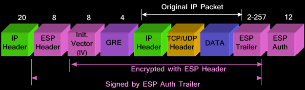
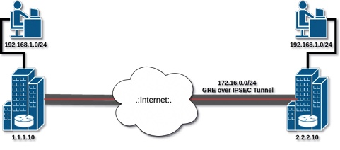

Cisco GRE over IPSEC

In the following is a sample configuration for GRE/IPSEC in Cisco IOS devices. you can tailor this to your needs (changing encryption algorithms, IP addresses etc), just remember to make sure they are the same on both sides (except for IP of course).
In later posts we will discover how to do this scenario in other platforms like Cisco ASA and StrongSWAN on Linux.
The best guide for learning how IPSec works: http://nvlpubs.nist.gov/nistpubs/Legacy/SP/nistspecialpublication800-77.pdf
1
2
3
4
5
6
7
8
9
10
11
12
13
14
15
16
17
18
19
20
21
22
23
24
25
26
27
28
29
30
31
32
33
34
R1(config)# interface Tunnel0
R1(config-if)# ip address 172.16.0.1 255.255.255.0
R1(config-if)# ip mtu 1400
R1(config-if)# ip tcp adjust-mss 1360
R1(config-if)# tunnel source 1.1.1.10
R1(config-if)# tunnel destination 2.2.2.10
R1(config)# ip route 192.168.2.0 255.255.255.0 172.16.0.2
R1(config)# crypto isakmp policy 1
R1(config-isakmp)# encr 3des
R1(config-isakmp)# hash md5
R1(config-isakmp)# authentication pre-share
R1(config-isakmp)# group 2
R1(config-isakmp)# lifetime 86400
R1(config)# crypto isakmp key CISCO address 2.2.2.10
R1(config)# crypto ipsec transform-set TS esp-3des esp-md5-hmac
R1(cfg-crypto-trans)# mode transport
R1(config)# crypto ipsec profile protect-gre
R1(ipsec-profile)# set security-association lifetime seconds 86400
R1(ipsec-profile)# set transform-set TS
R1(config)# interface Tunnel 0
R1(config-if)# tunnel protection ipsec profile protect-gre
1
2
3
4
5
6
7
8
9
10
11
12
13
14
15
16
17
18
19
20
21
22
23
24
25
26
27
28
29
30
31
32
33
34
35
36
R2(config)# interface Tunnel0
R2(config-if)# ip address 172.16.0.2 255.255.255.0
R2(config-if)# ip mtu 1400
R2(config-if)# ip tcp adjust-mss 1360
R2(config-if)# tunnel source 2.2.2.10
R2(config-if)# tunnel destination 1.1.1.10
R2(config)# ip route 192.168.1.0 255.255.255.0 172.16.0.1
R2(config)# crypto isakmp policy 1
R2(config-isakmp)# encr 3des
R2(config-isakmp)# hash md5
R2(config-isakmp)# authentication pre-share
R2(config-isakmp)# group 2
R2(config-isakmp)# lifetime 86400
R2(config)# crypto isakmp key CISCO address 1.1.1.10
R2(config)# crypto ipsec transform-set TS esp-3des esp-md5-hmac
R2(cfg-crypto-trans)# mode transport
R2(config)# crypto ipsec profile protect-gre
R2(ipsec-profile)# set security-association lifetime seconds 86400
R2(ipsec-profile)# set transform-set TS
R2(config)# interface Tunnel 0
R2(config-if)# tunnel protection ipsec profile protect-gre
Comments powered by Disqus.